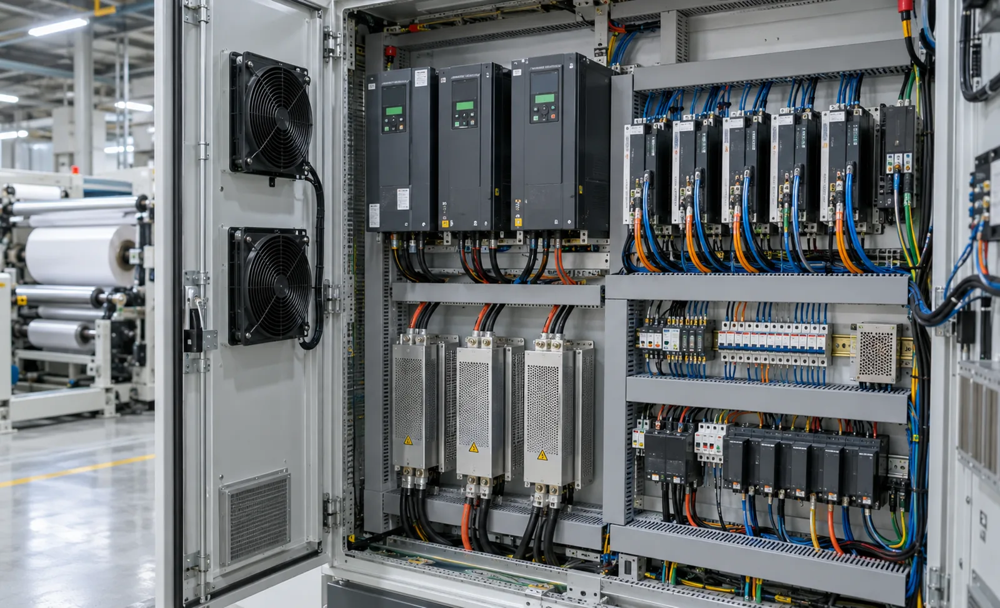
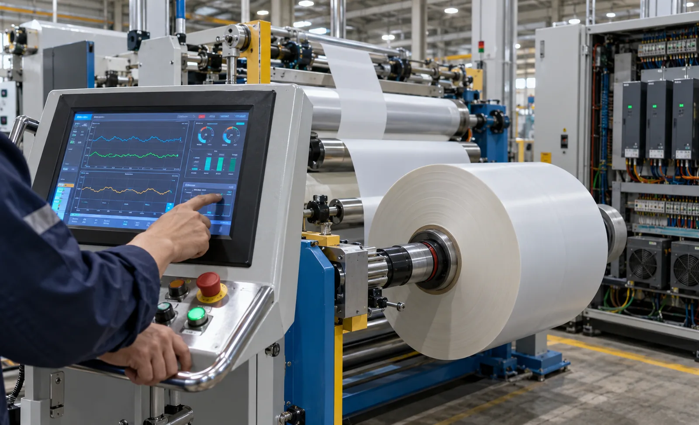

Published September 21, 2026 | By HDPTH Technical Editorial Team

Buyers rarely see drive sizing on an offer. The quotation lists motor powers and a drive family, while the real engineering stays hidden until commissioning — where undersized axes and missing braking capacity turn into telescoped rolls and hunting tension. This guide covers the questions that expose those problems while the machine is still a specification.
What each axis actually has to do
A slitter rewinder is a chain of torque sources with different duties. The unwind holds the web back against line tension and absorbs the energy of a heavy parent roll. Pull or nip rolls define line speed and hold it against slip and diameter change. The rewind builds torque as the roll grows while surface speed stays constant. Around them sit auxiliary axes — knife positioning, lay-on roller, turret index, trim extraction — whose duty is position, pressure or speed, not tension. Classifying axes by duty is the first step in choosing between a general-purpose drive and a servo axis.
VFD vs servo: assign by duty, not by budget
A modern vector-controlled AC drive with an induction or permanent-magnet motor delivers full rated torque at low speed and covers the continuous-duty axes economically — unwind, rewind, pull rolls and extraction. Servo drives add fast torque response, high overload capability and precise position control, which is what knife positioning, lay-on roller actuation and indexing need. Servo costs more per axis, so paying for it on a trim blower is waste — and omitting it on a knife positioning axis is a false economy. Ask bidders to list each axis with its drive type and the reason.
Sizing for tension zones
Sizing has to be done against the extremes of the roll cycle. At maximum roll diameter the rewind needs the highest torque at the lowest shaft speed, possibly at the edge of its constant-power range; at core diameter it needs the same tension at the highest shaft speed. A drive that is adequate on average droops at the end of every parent roll, which operators compensate for by hand. Drive sizing therefore belongs alongside the tension zone architecture decision: zone boundaries define where the torque has to appear.
| Sizing input | What to require from the supplier | Consequence if ignored |
|---|---|---|
| Torque envelope | Continuous and overload torque across the full diameter range, with gearbox ratio | Tension droop at full roll |
| Inertia | Roll inertia at maximum diameter and motor inertia ratio, checked against the acceleration ramp | Slow ramp-up, overshoot on decel |
| Speed range | Constant-power range and minimum controllable speed at rated torque | Jerky threading at low speed |
| Thermal duty | Thermal margin at your duty cycle and ambient temperature | Drive derates after a long shift and faults in the afternoon |
| Regeneration | Method, continuous and peak power, and behaviour on mains disturbance | Overvoltage trips during emergency stops and decel |
Regenerative loads: where the energy goes
Regeneration is normal on a rewinder, not an exotic case. Braking a large parent roll, decelerating a heavy finished roll and holding an overhauling load during a stop all push energy back into the DC link, and if nothing absorbs it the drive trips on overvoltage. Three architectures handle it: braking resistors that dissipate energy as heat; a common DC bus that lets motoring axes consume what braking axes produce; and a regenerative front end that returns energy to the supply. Resistors are cheapest but add cabinet heat, which affects the energy balance of the line. Specify the method, its ratings and its behaviour during a mains dip.
Integration with tension control and the PLC
Drives do not control tension on their own; the PLC does, using them as torque and speed actuators. All zones must work from one clock and one set of references, so require a documented fieldbus with a stated cycle time, tension setpoints and taper profiles stored in the recipe, and per-axis diagnostics as plain text rather than code. Uneven update rates between zones are a hidden cause of tension hunting — no gain tuning fixes a loop whose feedback arrives irregularly, whether feedback comes from load cells or a dancer.
What to write into the specification
- Axis list with motor power, gearbox, drive type and the duty reason for each choice.
- Torque and speed envelope across the full roll diameter range, with thermal margin at your duty cycle.
- Regeneration method and ratings, plus behaviour on mains disturbance and emergency stop.
- Motor efficiency classes and drive compliance documentation for the market of installation.
- Fieldbus and cycle time, recipe-stored tension profiles, plain-text per-axis diagnostics.
- Acceptance test with tension traces over acceleration, decel, splice and roll change.

Specifying a new machine or retrofit?
Send HDPTH your material range, widths, speeds, roll diameters and duty cycle. We will size the drive package per axis — regeneration and control integration included — and document it in the offer.
Submit Your Project InquiryQuestions to put to every vendor
- Which axes are servo, which are vector AC, and what is the engineering reason for each?
- What continuous and overload torque do you guarantee at maximum roll diameter and at core?
- How is regenerated energy handled, at what rating, and what happens on a mains dip?
- What fieldbus and cycle time connect drives to PLC, and are tension profiles stored per recipe?
- Will you provide torque and tension traces at FAT on my heaviest and lightest material?
Planning the rest of the handover?
Read our guides on rewind torque control and factory acceptance testing to align the drive package with your commissioning requirements.
Contact HDPTHFrequently asked questions
Should a slitter rewinder use VFDs or servo drives?
Most machines use both, assigned by duty rather than by budget. Vector-controlled AC drives with induction or permanent-magnet motors suit unwind braking, rewind torque, pull rolls and trim extraction, where the duty is continuous torque over a wide speed range. Servo drives earn their cost where response and position matter — automatic knife positioning, lay-on roller actuation, turret indexing and dancer or load-cell trimming stages. Ask each supplier which axes are servo and why; the answer shows how the machine actually controls tension.
How is a drive sized for a winding tension zone?
Sizing starts from the worst case in the roll cycle. The drive must deliver peak torque at maximum roll diameter while accelerating the full inertia of the built roll within the specified ramp, and hold controllable torque down to core diameter, where the motor runs slowest and cooling is weakest. Require continuous and overload torque, constant-power range, gearbox ratio, inertia ratio and thermal margin at your duty cycle. An average-case drive droops at the end of every parent roll.
When does a slitter rewinder need regenerative handling?
Whenever the machine removes energy from the web or from rotating mass: braking a large parent roll, decelerating a heavy finished roll, or holding an overhauling load during a stop. That energy is dissipated in braking resistors, shared across a common DC bus with motoring axes, or returned to the supply through a regenerative front end. Specify the method, its continuous and peak power rating, and behaviour during a mains disturbance. Resistors are cheap but waste energy and add cabinet heat.
What should buyers require for drive and PLC integration?
One control philosophy rather than independent drives. Tension setpoints and taper profiles belong in the machine recipe, drive status and faults should appear on the HMI as plain text, and the PLC should own the speed and torque references for every zone. Ask for a documented fieldbus, per-axis diagnostics showing torque, speed and temperature, and a jitter figure for the drive-to-PLC cycle time: uneven update rates between tension zones cause hunting that no gain tuning fixes.
Which motor efficiency class should be specified in the EU?
Motors and variable speed drives placed on the EU market are covered by ecodesign requirements, and industrial motors are supplied in efficiency classes defined by the IEC standard for rotating electrical machines. Require the supplier to state the class of every motor above the applicable threshold, confirm the drives meet the ecodesign requirements, and ship the documentation with the technical file.
Sources
- EU Regulation 2019/1781: ecodesign requirements for electric motors and variable speed drives
- IEC 60034-30-1: rotating machines — efficiency classes for line-operated AC motors
- IEC: IEC 60204-1, electrical equipment of machines
- Nidec Control Techniques: web handling drive application reference
- US DOE Advanced Manufacturing Office: motor system efficiency resources